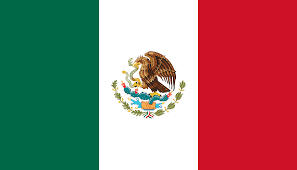

México
La Ciudad de México es la capital de la República Mexicana. Anterioremente se conocia como Distrito Federal. Es la ciudad con más población, con un ´rea metropolitana que sobrepasa los 21 millones de habitantes.
Se establece sobre un asentamiento mexica, lo nombraron México Tenochtitlan. En 1535 se creó oficialmente el Virreinato de la Nueva España.